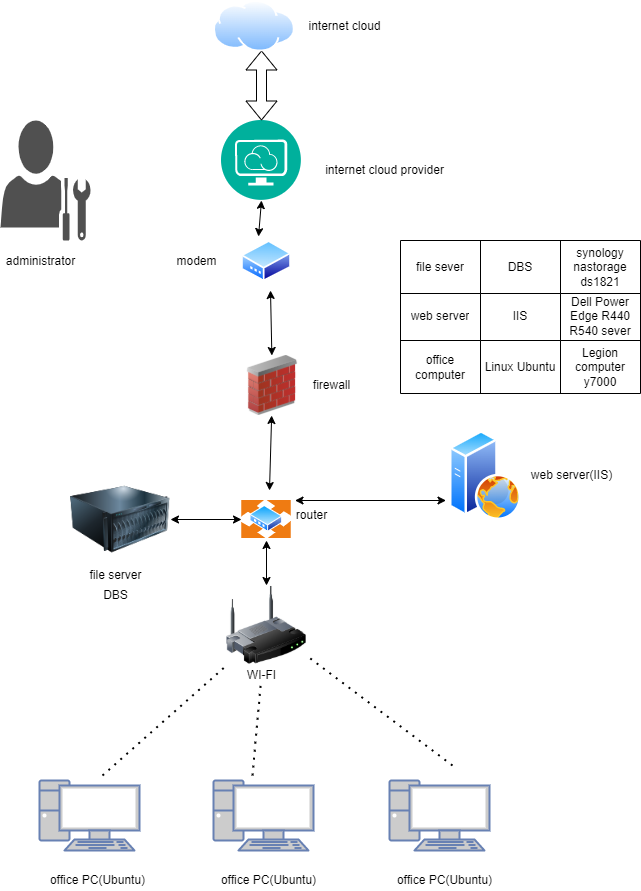
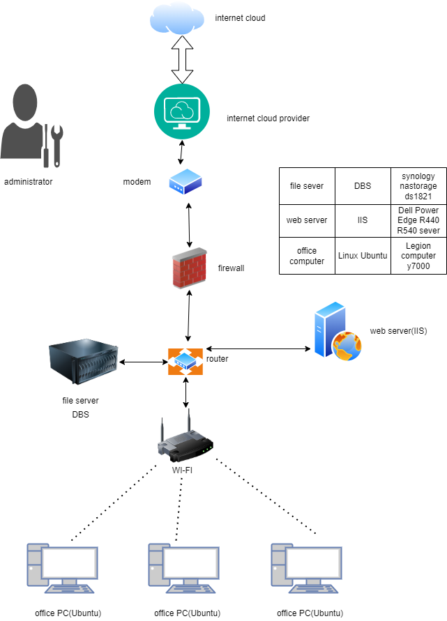

- Home
- Resume
- IT Project
future IT project that I would like to complete
 


IT Project: Website Production.
required hardware: service, PC, administrator
required software: database system, text editor
Values and methodology
values:
Treat things fairly and treat each project member fairly, which will greatly increase the cohesion and efficiency of the team. Treat the project seriously, not decadent, perfunctory treatment.
Project Approach: Waterfall
Complete each stage before starting the next stage.First plan how to build the website, then continue with the website design, then test and run the website, and finally identify the problem and maintain the websiteIn an IT environment, Waterfall is best suited for small or short-term repetitive projects with fixed requirements that do not change under any circumstances.
advantage:
The process is well documented and easy to manage and control;
Linear and therefore easier to understand.
shortcoming:
As the project life cycle is implemented, the cost of changing project deliverables will increase;
It takes a while for the first results of the project to manifest because it is not possible to have the project phases run concurrently.